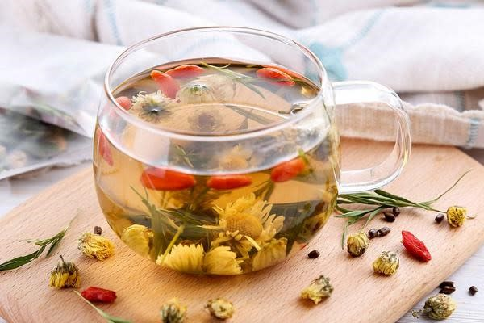
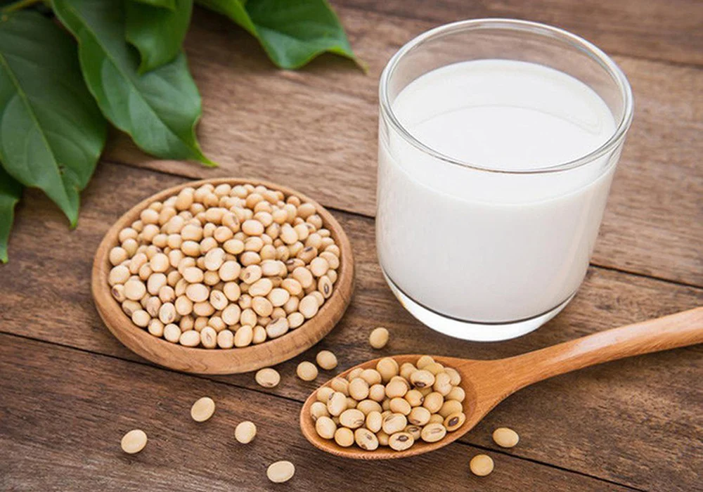
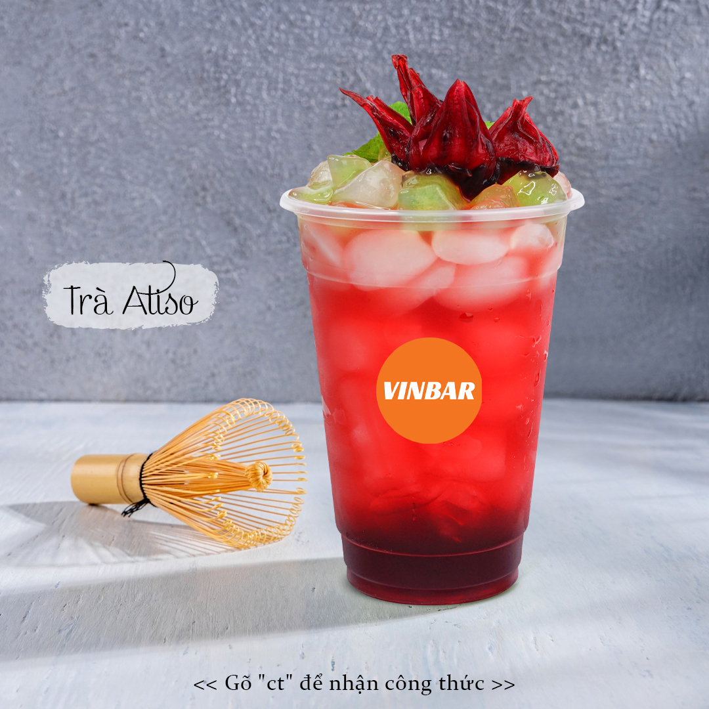

Giới Thiệu
Xin chào, tôi là Đức Anh. Dưới đây là danh sách những loại thức uống bổ dưỡng tốt cho sức khỏe mà tôi yêu thích nhất.
Bảng Xếp Hạng Nước Uống Tốt Cho Sức Khỏe
-
Trà hoa cúc
Trà hoa cúc giúp thanh nhiệt, giải độc và mang lại giấc ngủ ngon.

-
Sữa đậu lành
Sữa đậu lành giàu protein thực vật và rất tốt cho hệ tim mạch.

-
Trà Atiso
Trà Atiso hỗ trợ mát gan, làm đẹp da và tăng cường tiêu hóa.

Tham Khảo Thêm Thông Tin
Bạn có thể đọc thêm bài viết chi tiết về công dụng các loại nước uống tại Trang thông tin sức khỏe Điện Máy Xanh.